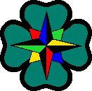
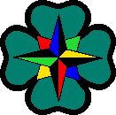

Turistakártya |
 Bevezetõ | Bevezetõ |
 Szabályok |
">Súgó | Szabályok |
">Súgó |
 Paklik Paklik
JelzésSúgó:
|
Turistakártya |
Bevezetõ |
Szabályok |
">Súgó |
Paklik
JelzésSúgó:
|

|
Alapjelzések Jelzéstulajdonságok:
Jelzéstulajdonságok:
 Illeszkedik rá:
Illeszkedik rá:
Ezek a jelzések a játék "hagyományos" jelei; lerakásukat nem kíséri egyéb
esemény.
Ha a játék során az aktuális lap turistajelzéses és – függetlenül attól, hogy éppen ki
következik – egy játékosnak az aktuális lappal egyezõ színû és jelzésû (vagy azzá váló metajelzésû) lapja
van, beszúrhatja azt (sorozhat is rá), és tõle folytatódik a játék. Ezt jelzi a  tulajdonság.
"A terepen az útjelzéseket az útvonal mentén fákra, illetve különbözõ tereptárgyakra festik. A jelzések fehér alapra, többféle színben készülhetnek." tulajdonság.
"A terepen az útjelzéseket az útvonal mentén fákra, illetve különbözõ tereptárgyakra festik. A jelzések fehér alapra, többféle színben készülhetnek."
Ezek a jelzések a Klub Slovenskıch Turistov (KST) szabványos, Szlovákiában alkalmazott turistajelzés-rendszerével egyezõek. |
|
|
|
Sávjelölés / Pásová znaèka:
|
 Lap teteje |

|
"Pásová znaèka pozostáva z troch rovnobenıch vodorovnıch farebnıch pásov.
Prostrednı pás je vyma¾ovanı vıraznou farbou (tzv. vodiacou farbou). Na celom
území Slovenska sa pouívajú štyri vodiace farby."
"A sávjelölés három párhuzamos, színes sáv. A középsõt élénk színûre festik
(vezetõ szín). Szlovákia területén négyféle vezetõszínt használnak."
|
|
"Èervená - najvıznamnejšie hrebeòové trasy"
"Piros - a legfontosabb gerincútvonalak"
|
|
|
"Modrá - oznaèenie dia¾kovıch trás spájajúcich dôleité vıchodiská s vıznamnımi
turistickımi cie¾mi"
"Kék - hosszútávú túraútvonalak, amelyek a legjelentõsebb turisztikai célok fontos
kiindulópontjait kötik össze"
|
|
|
"Zelená - vyznaèenie prístupovıch ciest k zaujímavım turistickım cie¾om (spravidla)"
"Zöld - érdekes, turisztikai célokhoz vezetõ utak"
|
|
|
"ltá - vyznaèenie krátkych spojoch medzi turistickımi znaèenımi trasami inıch farieb"
"Sárga - rövidebb utak, amelyek két, más színnel jelölt útvonalat kötnek össze"
|
|
|
|
Alakjelölés / Tvarové znaèky:
|
Lap teteje |


|
"Tvarové znaèky upozoròujú na zvláštne urèenie turistickej trasy."
"Az alakjelölések különleges rendeltetésû útvonalakra hívják fel a figyelmet."
"Miestná znaèka"
"Helyi jelzés"
"Znaèka náuènej trasy - oznaèenie trasy, na krorej je moné oboznámi sa s mietstnymi
zaujímavosami (zelená)"
"Ismeretterjesztõ útvonalak jelzése - ahol helyi érdekességeket lehet megismerni"
"Okruná znaèka - oznaèenie trasy tvoriacej okruh"
"Köralakú jelölés - körtúra útvonala"
|
|
|
Tartalmi jelölés / Vıznamové znaèky:
|
Lap teteje |


|
"Vıznamové znaèky oznaèujú krátke spojky, odboèky od turistickıch trás k turisticky zaujímavım objektom."
"A tratalmi jelölések érdekes tereptárgyakhoz vezetnek, rövidítések, leágazások a turistaútról."
"Miesto s rozh¾adom"
"Kilátóhely"
"Zrúcanina hradu alebo zámku"
"Vár- vagy kastélyrom"
"Prameò, studnièka"
"Forrás, kút"
"Chata, prístrešok"
"Kunyhó, esõház"
"Jaskyòa"
"Barlang"
"Turistickı vıznamnı objekt alebo lokalita"
"Turisztikailag jelentõs tereptárgy vagy hely"
|
|
|
|
|
|
|

![[SK]](../docimg/sk.gif)